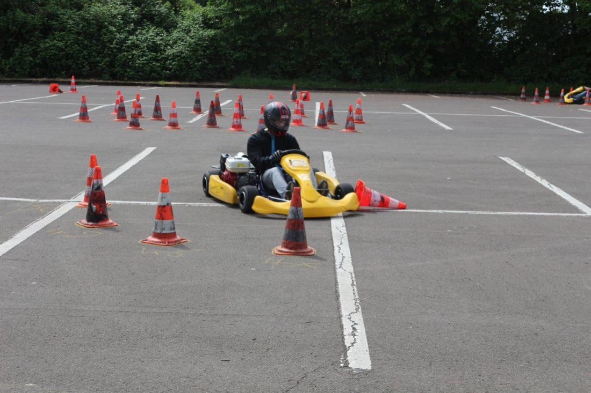
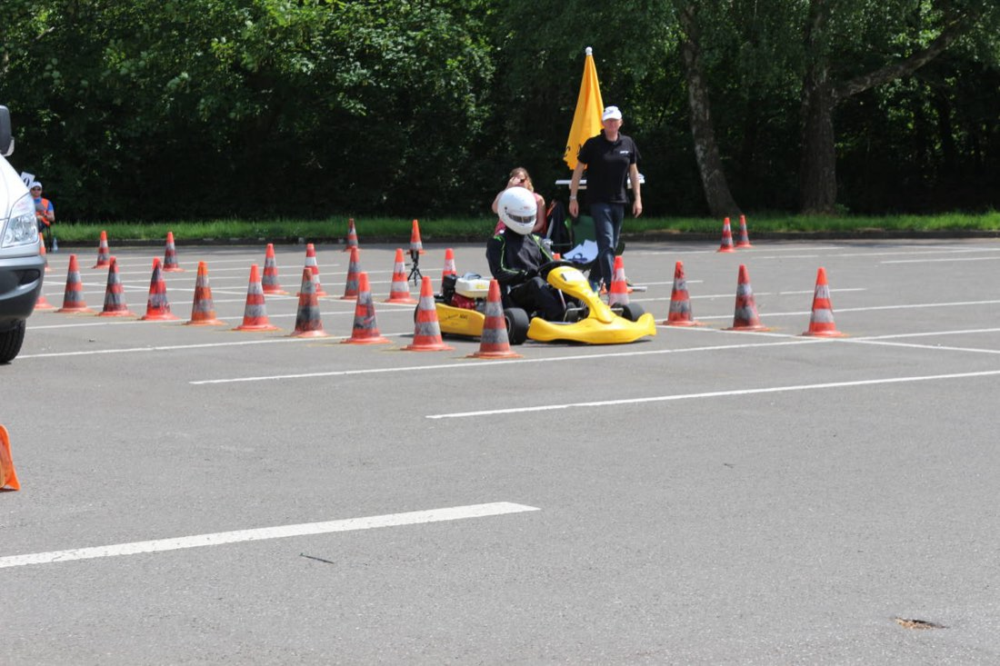

<!-- fonts: family=Archivo:wdth,wght@62..125,100..900&family=JetBrains+Mono:wght@400;500;700 -->
<style>
.d-technik{
  --ink:#0c0d0e; --paper:#fff; --fog:#f2f4f5; --mist:#dfe3e6; --grid:rgba(12,13,14,.07); --mute:#59626a;
  --red:#d5001c; --yellow:#ffcc00; --cols:12; --pad:14px;
  --gut:max(16px, env(safe-area-inset-left,0px), 3vw);
  --sans:"Archivo","Helvetica Neue",Arial,sans-serif; --mono:"JetBrains Mono",ui-monospace,"SF Mono",Menlo,monospace;
  background:var(--paper); color:var(--ink); font-family:var(--sans); font-size:16px; line-height:1.5;
  -webkit-font-smoothing:antialiased; overflow-wrap:break-word;
}
.d-technik *, .d-technik *::before, .d-technik *::after{box-sizing:border-box}
.d-technik h1, .d-technik h2, .d-technik h3, .d-technik p, .d-technik ul, .d-technik ol, .d-technik dl, .d-technik dd, .d-technik figure{margin:0; padding:0}
.d-technik ul, .d-technik ol{list-style:none}
.d-technik img{display:block; max-width:100%}
.d-technik a{color:inherit}
.d-technik :focus-visible{outline:2px solid var(--red); outline-offset:3px}
.d-technik [id]{scroll-margin-top:calc(var(--host-h,48px) + 76px)}
/* 12-column sheet: wrapper draws the visible column lines, .g places content on them */
.d-technik .w{position:relative; max-width:1320px; margin-inline:auto; padding-inline:var(--gut)}
.d-technik .w::before{content:""; position:absolute; inset:0 var(--gut); pointer-events:none; border-right:1px solid var(--grid);
  background-image:repeating-linear-gradient(90deg, var(--grid) 0 1px, transparent 1px calc(100% / var(--cols)))}
.d-technik .w.nl::before{display:none}
.d-technik .w > *{position:relative}
.d-technik .g{display:grid; grid-template-columns:repeat(12, minmax(0,1fr)); row-gap:40px}
.d-technik .g > *{padding-inline:var(--pad); grid-column:span 12}
.d-technik .g > .c2{grid-column:span 2} .d-technik .g > .c3{grid-column:span 3} .d-technik .g > .c4{grid-column:span 4}
.d-technik .g > .c5{grid-column:span 5} .d-technik .g > .c6{grid-column:span 6} .d-technik .g > .c7{grid-column:span 7} .d-technik .g > .c8{grid-column:span 8}
.d-technik .sec{padding-block:clamp(56px, 8vw, 108px)}
.d-technik .sec.fog{background:var(--fog)}
/* type */
.d-technik .m{font-family:var(--mono); font-size:12px; line-height:1.5; letter-spacing:.02em; color:var(--mute); font-variant-numeric:tabular-nums}
.d-technik .up{text-transform:uppercase; letter-spacing:.08em}
.d-technik h1{font-size:clamp(38px, min(5.4vw, 9vh), 78px); line-height:.96; font-weight:760; font-stretch:112%; letter-spacing:-.025em}
.d-technik h1 span{display:block}
.d-technik h2{font-size:clamp(28px, 3.4vw, 46px); line-height:1.02; font-weight:720; font-stretch:110%; letter-spacing:-.02em}
.d-technik h3{font-size:clamp(21px, 2vw, 27px); line-height:1.12; font-weight:680; font-stretch:108%; letter-spacing:-.012em}
.d-technik .lead{font-size:clamp(17px, 1.35vw, 19px); line-height:1.5; max-width:46ch}
.d-technik .txt{max-width:58ch}
.d-technik .txt + .txt{margin-top:12px}
.d-technik .sh{border-top:1px solid var(--ink); padding-top:14px; margin-bottom:clamp(28px, 4vw, 52px); row-gap:8px; align-items:end}
.d-technik .sh .m{text-align:right}
.d-technik .tag{display:block; margin-bottom:10px}
.d-technik .dot{display:inline-block; width:8px; height:8px; border-radius:50%; background:var(--yellow); box-shadow:0 0 0 1px var(--ink); margin-right:8px; vertical-align:1px}
/* actions */
.d-technik .b{display:inline-flex; align-items:center; min-height:46px; padding:0 20px; font:620 15px/1 var(--sans); text-decoration:none; border:1px solid var(--ink); background:var(--paper); color:var(--ink); cursor:pointer; transition:background .18s, color .18s, border-color .18s}
.d-technik .b:hover{background:var(--ink); color:var(--paper)}
.d-technik .b.red{background:var(--red); border-color:var(--red); color:#fff}
.d-technik .b.red:hover{background:var(--ink); border-color:var(--ink)}
.d-technik .lk{font-family:var(--mono); font-size:12.5px; text-underline-offset:4px; text-decoration-thickness:1px; text-decoration-color:var(--mist); transition:color .15s, text-decoration-color .15s}
.d-technik .lk:hover{color:var(--red); text-decoration-color:var(--red)}
/* header */
.d-technik .hd{position:sticky; top:var(--host-h,48px); z-index:5; background:rgba(255,255,255,.94); border-bottom:1px solid var(--ink)}
@supports (backdrop-filter:blur(8px)){.d-technik .hd{background:rgba(255,255,255,.82); backdrop-filter:blur(10px)}}
.d-technik .hd .w{display:flex; align-items:center; gap:10px 22px; flex-wrap:wrap; min-height:60px}
.d-technik .brand{display:flex; align-items:center; gap:10px; text-decoration:none; margin-right:auto}
.d-technik .brand img{height:38px; width:auto}
.d-technik .brand b{font-weight:760; font-stretch:112%; font-size:17px; letter-spacing:-.01em}
.d-technik .nav{display:flex; gap:22px}
.d-technik .nav a{font-family:var(--mono); font-size:12.5px; text-decoration:none; padding:8px 0; border-bottom:1px solid transparent; white-space:nowrap}
.d-technik .nav a:hover{border-color:var(--red); color:var(--red)}
.d-technik .lang{font:500 12px/1 var(--mono); background:none; border:1px solid var(--mist); color:var(--ink); padding:8px 10px; cursor:pointer}
.d-technik .lang:hover{border-color:var(--ink)}
.d-technik .hd .b{min-height:38px; padding:0 14px; font-size:14px}
/* hero */
.d-technik .hero{padding-top:clamp(28px, 4vw, 48px)}
.d-technik .hero .g{row-gap:28px; align-items:end; padding-bottom:clamp(28px, 4vw, 44px)}
.d-technik .hero h1{margin:18px 0 20px}
.d-technik .hero h1 span + span{color:var(--red)}
.d-technik .cta{display:flex; flex-wrap:wrap; gap:10px; margin-top:26px}
.d-technik .fig img{width:100%; object-fit:cover; filter:grayscale(1) contrast(1.06); transition:filter .45s ease}
.d-technik .fig:hover img{filter:none}
.d-technik .fig figcaption{display:flex; gap:10px; padding-top:7px; border-top:1px solid var(--ink); margin-top:7px}
.d-technik .fig figcaption b{color:var(--ink); font-weight:700; white-space:nowrap}
.d-technik .hero .fig img{aspect-ratio:16/9; object-position:50% 72%; max-height:36vh}
.d-technik .next{background:var(--ink); color:#fff}
.d-technik .next .w::before{--grid:rgba(255,255,255,.11)}
.d-technik .next .g{row-gap:16px; align-items:center; padding-block:18px}
.d-technik .next .m{color:#aab2b8}
.d-technik .next .big{font:700 clamp(20px, 2vw, 28px)/1 var(--mono); letter-spacing:-.02em; white-space:nowrap}
.d-technik .next .big i{font-style:normal; color:#aab2b8; font-weight:400}
.d-technik .next .pl{font-weight:600; font-size:17px; line-height:1.25}
.d-technik .cd{display:flex; gap:14px; justify-content:flex-end}
.d-technik .cd div{min-width:3ch}
.d-technik .cd b{display:block; font:700 clamp(22px, 2.3vw, 30px)/1 var(--mono); font-variant-numeric:tabular-nums}
.d-technik .cd span{display:block; margin-top:5px}
/* Termine table */
.d-technik .tb{width:100%; border-collapse:collapse}
.d-technik .tb th{font:500 11.5px/1 var(--mono); letter-spacing:.08em; text-transform:uppercase; color:var(--mute); text-align:left; padding:0 var(--pad) 10px; border-bottom:1px solid var(--ink)}
.d-technik .tb td{padding:20px var(--pad); border-bottom:1px solid var(--mist); vertical-align:top}
.d-technik .tb tr:last-child td{border-bottom-color:var(--ink)}
.d-technik .tb tbody tr{transition:background .15s}
.d-technik .tb tbody tr:hover{background:var(--paper)}
.d-technik .tb .dt{width:16.666%; white-space:nowrap; font-family:var(--mono)}
.d-technik .tb .dt span{font-size:12px; color:var(--mute); margin-right:8px}
.d-technik .tb .dt b{font-size:clamp(20px, 2vw, 26px); font-weight:700; letter-spacing:-.02em}
.d-technik .tb .ev{display:block; font-weight:650; font-size:17px; line-height:1.3}
.d-technik .tb .ev + .m{display:block; margin-top:4px}
.d-technik .tb .lks{white-space:nowrap}
.d-technik .tb .lks a + a{margin-left:16px}
.d-technik .tb .live td{background:var(--paper)}
/* Abteilungen */
.d-technik .dg{overflow-x:auto; border:1px solid var(--ink); background:var(--paper)}
.d-technik .dg svg{display:block; width:100%; min-width:600px; height:auto}
.d-technik .dg text{font:500 11px var(--mono); fill:var(--mute); letter-spacing:.04em}
.d-technik .dg .k{stroke:var(--ink); stroke-width:1.2; fill:none}
.d-technik .dg .dim{stroke:var(--mute); stroke-width:.8; fill:none}
.d-technik .dg .py{fill:var(--paper); stroke:var(--ink); stroke-width:1.6}
.d-technik .dg .py.hit{fill:var(--yellow)}
.d-technik .dg .ideal{stroke:var(--mist); stroke-width:1.4; stroke-dasharray:3 5; fill:none}
.d-technik .dg .race{stroke:var(--red); stroke-width:2.6; stroke-linecap:round; fill:none; stroke-dasharray:1; stroke-dashoffset:0}
.d-technik .dg .kart{fill:var(--red); stroke:var(--paper); stroke-width:2}
.d-technik .read{display:flex; flex-wrap:wrap; justify-content:space-between; gap:6px 16px; padding-top:7px}
.d-technik .read b{color:var(--ink)}
.d-technik .box{border-top:1px solid var(--ink); padding-top:14px}
.d-technik .box h3{font-size:18px; margin-bottom:12px}
.d-technik .rows li, .d-technik .rows div{display:flex; justify-content:space-between; gap:14px; padding:9px 0; border-bottom:1px solid var(--mist); font-size:15px}
.d-technik .rows .m{color:var(--ink); font-size:13px; white-space:nowrap}
.d-technik .rows .pen{color:var(--red); font-weight:700}
.d-technik .ex{margin-top:14px; padding:12px 14px; background:var(--fog); font-family:var(--mono); font-size:13px; line-height:1.7}
.d-technik .ex small{display:block; font-size:11px; letter-spacing:.08em; text-transform:uppercase; color:var(--mute)}
.d-technik .ex b{color:var(--red)}
.d-technik .inv{border:1px solid var(--ink); background:var(--paper); padding:clamp(22px, 3.4vw, 44px) 0; margin-inline:var(--pad); row-gap:24px; align-items:start}
.d-technik .g > .inv{padding-inline:0}
.d-technik .inv > *{padding-inline:clamp(18px, 2.6vw, 34px)}
.d-technik .inv h3{font-size:clamp(26px, 3.2vw, 44px); line-height:1.02; font-weight:740; margin-bottom:16px}
.d-technik .chk li{display:flex; gap:12px; align-items:baseline; padding:10px 0; border-bottom:1px solid var(--mist); font-size:15px}
.d-technik .chk li::before{content:""; flex:none; width:11px; height:11px; border:1px solid var(--ink); background:linear-gradient(var(--red),var(--red)) center/5px 5px no-repeat}
.d-technik .two{margin-top:clamp(40px, 6vw, 72px)}
.d-technik .n55{font:700 clamp(64px, 9vw, 128px)/.85 var(--mono); letter-spacing:-.06em; margin-top:22px}
.d-technik .must img{aspect-ratio:3/2; max-width:420px}
.d-technik .must{margin-top:20px; max-width:420px}
/* Über uns */
.d-technik .bento{display:grid; grid-template-columns:repeat(6, 1fr); gap:1px; background:var(--ink); border:1px solid var(--ink)}
.d-technik .bento div{background:var(--paper); padding:16px; display:flex; flex-direction:column; justify-content:space-between; gap:22px; min-height:128px; grid-column:span 2}
.d-technik .bento b{font:700 clamp(30px, 3.4vw, 46px)/.9 var(--mono); letter-spacing:-.05em; white-space:nowrap}
.d-technik .bento .x1{grid-column:span 4; grid-row:span 2; background:var(--ink); color:#fff}
.d-technik .bento .x1 b{font-size:clamp(64px, 9vw, 124px)}
.d-technik .bento .x1 .m{color:#aab2b8}
.d-technik .bento .x3{grid-column:span 3}
.d-technik .bento .fg{background:var(--fog)}
.d-technik .vs{display:grid; grid-template-columns:repeat(4, 1fr); border-top:1px solid var(--ink); margin-top:clamp(36px, 5vw, 60px)}
.d-technik .vs div{padding:14px var(--pad) 18px; border-bottom:1px solid var(--mist)}
.d-technik .vs dd{font-weight:600; font-size:15.5px; line-height:1.35; margin-top:4px}
/* Galerie */
.d-technik .gal{display:grid; grid-template-columns:repeat(12, minmax(0,1fr)); row-gap:26px}
.d-technik .gal .fig{padding-inline:var(--pad); grid-column:span 3}
.d-technik .gal .a4{grid-column:span 4} .d-technik .gal .a2{grid-column:span 2}
.d-technik .gal img{height:clamp(130px, 14.5vw, 200px)}
.d-technik .gal figcaption{flex-wrap:wrap; gap:0 10px}
/* Mitglied, Verein, Kontakt, Partner */
.d-technik .dl a{display:grid; grid-template-columns:1fr auto auto; gap:16px; align-items:baseline; padding:18px 0; border-bottom:1px solid var(--mist); text-decoration:none; transition:padding .2s, border-color .2s}
.d-technik .dl li:first-child a{border-top:1px solid var(--ink)}
.d-technik .dl a b{font-size:clamp(18px, 1.8vw, 23px); font-weight:650; font-stretch:106%}
.d-technik .dl a i{font:normal 500 16px var(--mono); color:var(--red); transition:transform .2s}
.d-technik .dl a:hover{padding-left:10px; border-color:var(--ink)}
.d-technik .dl a:hover i{transform:translateY(3px)}
.d-technik .map{position:relative; min-height:320px; height:100%; border:1px solid var(--ink); padding:16px; display:flex; flex-direction:column; justify-content:space-between; gap:120px;
  background:linear-gradient(var(--grid) 1px, transparent 1px) 0 0/100% 32px, linear-gradient(90deg, var(--grid) 1px, transparent 1px) 0 0/32px 100%, var(--fog)}
.d-technik .map::before, .d-technik .map::after{content:""; position:absolute; background:var(--ink); opacity:.55}
.d-technik .map::before{left:0; right:0; top:50%; height:1px}
.d-technik .map::after{top:0; bottom:0; left:62%; width:1px}
.d-technik .map .pin{position:absolute; left:62%; top:50%; width:14px; height:14px; margin:-7px; border-radius:50%; background:var(--yellow); border:2px solid var(--ink); z-index:1}
.d-technik .map .pin::after{content:""; position:absolute; inset:-11px; border:1px solid var(--red); border-radius:50%}
.d-technik .map > div{position:relative; z-index:1; align-self:flex-start; background:var(--paper); border:1px solid var(--ink); padding:10px 12px}
.d-technik .map .ad{font-weight:600; line-height:1.35}
.d-technik .fm{display:grid; grid-template-columns:1fr 1fr; gap:22px 28px}
.d-technik .fm label{display:block}
.d-technik .fm .full{grid-column:1 / -1}
.d-technik .fm input, .d-technik .fm textarea{display:block; width:100%; margin-top:6px; padding:10px 0; font:inherit; font-size:16px; color:var(--ink); background:transparent; border:0; border-bottom:1px solid var(--ink); border-radius:0; resize:vertical}
.d-technik .fm input:focus-visible, .d-technik .fm textarea:focus-visible{outline:none; border-bottom:2px solid var(--red); padding-bottom:9px}
.d-technik .fm .act{display:flex; flex-wrap:wrap; align-items:center; gap:14px}
.d-technik .note{font-family:var(--mono); font-size:13px; padding:8px 12px; background:var(--paper); border:1px solid var(--ink)}
.d-technik .mail{font:500 clamp(15px, 1.5vw, 18px) var(--mono); color:var(--ink); margin-top:22px; display:block}
.d-technik .pt{display:grid; grid-template-columns:repeat(4, 1fr); border-top:1px solid var(--ink)}
.d-technik .pt li{padding:22px var(--pad); border-bottom:1px solid var(--mist); font-weight:650; font-stretch:108%; font-size:clamp(16px, 1.5vw, 19px); line-height:1.25; min-height:92px}
.d-technik .pt .sp{background:var(--ink); color:#fff; font-weight:500}
.d-technik .pt .sp a{display:block; margin-top:6px; color:#fff}
/* footer as drawing title block */
.d-technik .ft{border-top:1px solid var(--ink); padding-block:28px 36px}
.d-technik .ft .g{row-gap:20px; align-items:start}
.d-technik .ft img{height:64px; width:auto}
.d-technik .ft dd{font-weight:600; font-size:15px; line-height:1.35; margin-top:3px}
.d-technik .ft .lks{display:flex; gap:20px; justify-content:flex-end}
@media (max-width:900px){
  .d-technik{--cols:4; --pad:10px}
  .d-technik .g > [class]{grid-column:span 12}
  .d-technik .g > .h6{grid-column:span 6}
  .d-technik .sh .m{text-align:left}
  .d-technik .nav{order:3; width:100%; overflow-x:auto; gap:18px; border-top:1px solid var(--mist); scrollbar-width:none}
  .d-technik .hd .w{gap:6px 10px; padding-top:8px}
  .d-technik .cd{justify-content:flex-start}
  .d-technik .hero .fig img{max-height:none}
  .d-technik .tb thead{position:absolute; width:1px; height:1px; overflow:hidden; clip-path:inset(50%)}
  .d-technik .tb tr{display:grid; grid-template-columns:1fr; padding:16px 0; border-bottom:1px solid var(--mist)}
  .d-technik .tb td{display:block; padding:3px var(--pad); border:0; width:auto}
  .d-technik .tb .dt{width:auto}
  .d-technik .tb .lks{padding-top:10px}
  .d-technik .bento .x1{grid-column:span 6; grid-row:auto}
  .d-technik .bento div{grid-column:span 3; min-height:108px}
  .d-technik .vs, .d-technik .pt{grid-template-columns:1fr 1fr}
  .d-technik .gal .fig, .d-technik .gal .a4, .d-technik .gal .a2{grid-column:span 6}
  .d-technik .gal img{height:clamp(104px, 30vw, 220px)}
  .d-technik .map{gap:90px}
  .d-technik .ft .lks{justify-content:flex-start}
}
@media (max-width:520px){
  .d-technik .fm{grid-template-columns:1fr}
  .d-technik .brand b{display:none}
  .d-technik .gal figcaption span{display:none}
}
@media (hover:none){
  .d-technik .hero .fig img, .d-technik .must img, .d-technik .gal .fig:first-child img{filter:none}
}
@media (prefers-reduced-motion:reduce){
  .d-technik *{transition:none !important}
}
</style>
<section class="dir d-technik" id="dir-technik">
  <header class="hd">
    <div class="w nl">
      <a class="brand" href="#dir-technik"><b>AC Herringhausen</b></a>
      <nav class="nav" aria-label="Hauptnavigation">
        <a href="#technik-termine" data-en="Dates">Termine</a><a href="#technik-abt" data-en="Sections">Abteilungen</a>
        <a href="#technik-verein" data-en="The club">Verein</a><a href="#technik-galerie" data-en="Gallery">Galerie</a>
        <a href="#technik-mitglied" data-en="Join">Mitglied werden</a><a href="#technik-kontakt" data-en="Contact">Kontakt</a>
      </nav>
      <button class="lang" type="button" data-lang-toggle>DE / EN</button>
      <a class="b red" href="#technik-probe" data-en="Trial session">Probetraining</a>
    </div>
  </header>
  <div class="hero">
    <div class="w">
      <div class="g">
        <div class="c7">
          <p class="m up" data-en="AC Herringhausen e.V. im ADAC · Local club of ADAC Ostwestfalen-Lippe · est. 01.08.1969">AC Herringhausen e.V. im ADAC · Ortsclub im ADAC Ostwestfalen-Lippe · gegr. 01.08.1969</p>
          <h1><span data-en="Against the clock,">Gegen die Uhr,</span><span data-en="between the pylons.">zwischen den Pylonen.</span></h1>
          <p class="lead" data-en="Youth kart slalom, club-sport slalom and classic car rallying in Herford / Hiddenhausen. A platform for young and old to get into motorsport, since 1969.">Jugend-Kart-Slalom, Clubsport-Slalom und Oldtimer-Rallye in Herford / Hiddenhausen. Eine Plattform für Jung und Alt, um sich sportlich zu betätigen, seit 1969.</p>
          <div class="cta">
            <a class="b red" href="#technik-probe" data-en="Come to a trial session →">Zum Probetraining →</a>
            <a class="b" href="#technik-termine" data-en="Dates 2026">Termine 2026</a>
          </div>
        </div>
        <figure class="fig c5">
          
          <figcaption class="m"><b data-en="Fig. 1">Abb. 1</b><span data-en="Scoring run, youth kart slalom. Only one driver on the course at a time.">Wertungslauf, Jugend-Kart-Slalom. Immer nur ein Fahrer auf der Strecke.</span></figcaption>
        </figure>
      </div>
    </div>
    <div class="next" aria-label="Nächstes Training">
      <div class="w">
        <div class="g">
          <p class="m up c2 h6"><span class="dot"></span><span data-en="Next training">Nächstes Training</span></p>
          <p class="big c3 h6"><i data-en="SAT">SA</i> <span data-nx-date>--.--.</span> <i>15:00</i></p>
          <div class="c3">
            <p class="pl" data-en="Kart training, Goksch company grounds">Kart-Training, Gelände der Firma Goksch</p>
            <p class="m" data-en="every Saturday 15:00, except during school holidays">jeden Samstag 15:00 Uhr, außer in den Ferien</p>
          </div>
          <div class="cd c4" role="timer" aria-label="Countdown bis zum nächsten Training">
            <div><b data-nx="d">--</b><span class="m" data-en="days">Tage</span></div><div><b data-nx="h">--</b><span class="m" data-en="hrs">Std</span></div>
            <div><b data-nx="m">--</b><span class="m" data-en="min">Min</span></div><div><b data-nx="s">--</b><span class="m" data-en="sec">Sek</span></div>
          </div>
        </div>
      </div>
    </div>
  </div>
  <div class="sec fog" id="technik-termine">
    <div class="w">
      <header class="sh g">
        <h2 class="c7" data-en="Dates 2026">Termine 2026</h2>
        <p class="m c5" data-en="Season 2026 finished · 2027 dates to follow">Saison 2026 beendet · Termine 2027 folgen</p>
      </header>
      <table class="tb">
        <thead><tr><th scope="col" data-en="Date">Datum</th><th scope="col" data-en="Event">Veranstaltung</th><th scope="col" data-en="Venue">Ort</th><th scope="col">Status</th><th scope="col" data-en="Documents">Unterlagen</th></tr></thead>
        <tbody>
          <tr class="live">
            <td class="dt"><span data-en="SAT">SA</span><b>15:00</b></td><td><span class="ev" data-en="Kart training">Kart-Training</span><span class="m" data-en="weekly, except during school holidays">wöchentlich, außer in den Ferien</span></td>
            <td data-en="Goksch company grounds">Gelände der Firma Goksch</td><td class="m"><span class="dot"></span><span data-en="ongoing">laufend</span></td>
            <td class="lks"><a class="lk" href="#technik-probe" data-en="Trial session">Probetraining</a></td>
          </tr>
          <tr>
            <td class="dt"><span data-en="SUN">SO</span><b>19.04.</b></td><td><span class="ev" data-en="ADAC Youth Kart Slalom “AC Herringhausen”">ADAC Jugend-Kart-Slalom „AC Herringhausen“</span><span class="m" data-en="Youth kart slalom">Jugend-Kart-Slalom</span></td>
            <td data-en="toom hardware store, Herringhausen">toom-Baumarkt Herringhausen</td><td class="m" data-en="finished">beendet</td>
            <td class="lks"><a class="lk" href="#" data-en="Regulations">Ausschreibung</a><a class="lk" href="#" data-en="Results">Ergebnisse</a></td>
          </tr>
          <tr>
            <td class="dt"><span data-en="SUN">SO</span><b>14.06.</b></td><td><span class="ev" data-en="55th ADAC Automobile Club-Sport Slalom “AC Herringhausen”">55. ADAC Automobil-Clubsport-Slalom „AC Herringhausen“</span><span class="m" data-en="Club-sport slalom">Clubsport-Slalom</span></td>
            <td class="m" data-en="see regulations">siehe Ausschreibung</td><td class="m" data-en="finished">beendet</td>
            <td class="lks"><a class="lk" href="#" data-en="Regulations">Ausschreibung</a><a class="lk" href="#" data-en="Results">Ergebnisse</a></td>
          </tr>
          <tr>
            <td class="dt"><span data-en="SUN">SO</span><b>06.09.</b></td><td><span class="ev" data-en="ADAC Automobile Club-Sport Slalom “VG Kreis Herford”">ADAC Automobil-Clubsport-Slalom „VG Kreis Herford“</span><span class="m" data-en="Club-sport slalom">Clubsport-Slalom</span></td>
            <td class="m" data-en="see regulations">siehe Ausschreibung</td><td class="m" data-en="finished">beendet</td>
            <td class="lks"><a class="lk" href="#" data-en="Regulations">Ausschreibung</a><a class="lk" href="#" data-en="Results">Ergebnisse</a></td>
          </tr>
        </tbody>
      </table>
    </div>
  </div>
  <div class="sec" id="technik-abt">
    <div class="w">
      <header class="sh g">
        <h2 class="c7" data-en="Three sections">Drei Abteilungen</h2>
        <p class="m c5" data-en="Youth kart slalom · Club-sport slalom · Classic car rally">Jugend-Kart-Slalom · Clubsport-Slalom · Oldtimer-Rallye</p>
      </header>
      <div class="g">
        <div class="c4">
          <span class="m up tag" data-en="Section · Youth, 8 to 18">Abteilung · Jugend, 8 bis 18 Jahre</span>
          <h3 data-en="Youth kart slalom">Jugend-Kart-Slalom</h3>
          <p class="txt" style="margin-top:14px" data-en="Grassroots karting for ages 8 to 18. Four-stroke karts on a pylon course laid out on car parks, against the clock, and always just one driver on the course.">Breitensport-Kartsport für 8 bis 18 Jahre. Mit Viertakt-Karts durch einen Pylonenkurs auf Parkplätzen, gegen die Zeit, und immer nur ein Fahrer auf der Strecke.</p>
          <p class="m" style="margin-top:20px" data-en="Contacts">Ansprechpartner</p>
          <p style="font-weight:600">Detlef Kollmeier, Uwe Ritter</p>
        </div>
        <figure class="c8">
          <div class="dg">
            <svg viewBox="0 0 800 350" role="img" aria-label="Schematischer Pylonenkurs mit Start, Slalom, Wende, Tor, Gasse und Ziel; die Fahrlinie ist rot eingezeichnet">
              <path class="ideal" d="M40 275C90 275 100 248 140 248S180 302 220 302 260 248 300 248 340 302 380 302 420 248 460 248C520 248 640 262 700 244 762 224 772 128 712 104 682 92 640 95 600 95L110 95"/>
              <path class="k" d="M70 248V302M150 68V122"/>
              <path class="dim" d="M140 318H460M140 312V324M460 312V324M260 50H420M260 44V56M420 44V56M380 275L404 236M520 118L532 138"/>
              <g class="py"><circle cx="140" cy="275" r="4.5"/><circle cx="220" cy="275" r="4.5"/><circle cx="300" cy="275" r="4.5"/><circle class="py hit" cx="380" cy="275" r="4.5"/><circle cx="460" cy="275" r="4.5"/>
                <circle cx="700" cy="172" r="4.5"/><circle cx="520" cy="72" r="4.5"/><circle cx="520" cy="118" r="4.5"/>
                <circle cx="420" cy="76" r="3.5"/><circle cx="380" cy="76" r="3.5"/><circle cx="340" cy="76" r="3.5"/><circle cx="300" cy="76" r="3.5"/><circle cx="260" cy="76" r="3.5"/>
                <circle cx="420" cy="114" r="3.5"/><circle cx="380" cy="114" r="3.5"/><circle cx="340" cy="114" r="3.5"/><circle cx="300" cy="114" r="3.5"/><circle cx="260" cy="114" r="3.5"/></g>
              <path class="race" data-race pathLength="1" d="M40 275C90 275 100 248 140 248S180 302 220 302 260 248 300 248 340 302 380 302 420 248 460 248C520 248 640 262 700 244 762 224 772 128 712 104 682 92 640 95 600 95L110 95"/>
              <circle class="kart" data-kart cx="110" cy="95" r="6"/>
              <text x="70" y="322" text-anchor="middle">START</text>
              <text x="150" y="56" text-anchor="middle" data-en="FINISH">ZIEL</text>
              <text x="300" y="338" text-anchor="middle" data-en="Slalom · 5 pylons">Slalom · 5 Pylonen</text>
              <text x="340" y="38" text-anchor="middle" data-en="Lane">Gasse</text>
              <text x="520" y="56" text-anchor="middle" data-en="Gate">Tor</text>
              <text x="688" y="176" text-anchor="end" data-en="Turn 180°">Wende 180°</text>
              <text x="410" y="232" data-en="Pylon error: +2 s">Pylonenfehler: +2 s</text>
              <text x="538" y="150" data-en="Task missed: +10 s">Aufgabe ausgelassen: +10 s</text>
            </svg>
          </div>
          <figcaption class="m read"><span><b data-en="Fig. 2">Abb. 2</b> <span data-en="Pylon course, schematic, not to scale">Pylonenkurs, schematisch, nicht maßstäblich</span></span><span><span data-en="Example run">Beispiellauf</span> <b data-time>t = 42,31 s</b></span></figcaption>
        </figure>
        <div class="c4 box">
          <h3 data-en="Three runs">Drei Läufe</h3>
          <ol class="rows">
            <li><span data-en="Practice run">Trainingslauf</span><span class="m" data-en="run 1 · not scored">Lauf 1 · ohne Wertung</span></li><li><span data-en="First scoring run">Erster Wertungslauf</span><span class="m" data-en="run 2 · scored">Lauf 2 · Wertung</span></li>
            <li><span data-en="Second scoring run">Zweiter Wertungslauf</span><span class="m" data-en="run 3 · scored">Lauf 3 · Wertung</span></li>
          </ol>
        </div>
        <div class="c4 box">
          <h3 data-en="Penalty seconds">Strafsekunden</h3>
          <ul class="rows">
            <li><span data-en="Pylon error">Pylonenfehler</span><span class="m pen">+2 s</span></li><li><span data-en="Task missed">Ausgelassene Aufgabe</span><span class="m pen">+10 s</span></li>
          </ul>
          <p class="ex"><small data-en="Example">Beispiel</small><span data-en="Run time 42.31 s + 1 pylon (2 s)">Fahrzeit 42,31 s + 1 Pylone (2 s)</span> <b>= 44,31 s</b></p>
        </div>
        <div class="c4 box">
          <h3 data-en="Classes">Klassen</h3>
          <dl class="rows">
            <div><dt class="m">P1</dt><dd data-en="approx. 8–9 years">ca. 8–9 Jahre</dd></div><div><dt class="m">P2</dt><dd data-en="approx. 10–11 years">ca. 10–11 Jahre</dd></div>
            <div><dt class="m">P3</dt><dd data-en="approx. 12–13 years">ca. 12–13 Jahre</dd></div><div><dt class="m">P4</dt><dd data-en="approx. 14–15 years">ca. 14–15 Jahre</dd></div>
            <div><dt class="m">P5</dt><dd data-en="approx. 16–18 years">ca. 16–18 Jahre</dd></div>
          </dl>
        </div>
        <div class="inv g" id="technik-probe">
          <div class="c7">
            <span class="m up tag" data-en="Trial session · from age 7">Probetraining · ab 7 Jahren</span>
            <h3 data-en="Curious? Just come and take a seat.">Neugierig? Setz dich einfach mal rein.</h3>
            <p class="txt" data-en="We train every Saturday at 15:00 on the Goksch company grounds (except during school holidays). Drop by, watch a few runs and drive the course yourself. Detlef Kollmeier and Uwe Ritter will show you the way through the pylons.">Wir trainieren jeden Samstag um 15:00 Uhr auf dem Gelände der Firma Goksch (außer in den Ferien). Komm vorbei, schau dir ein paar Läufe an und fahr den Kurs selbst. Detlef Kollmeier und Uwe Ritter zeigen dir den Weg durch die Pylonen.</p>
            <div class="cta"><a class="b red" href="#technik-kontakt" data-en="Ask about a trial session →">Probetraining anfragen →</a></div>
          </div>
          <div class="c5">
            <p class="m up" data-en="Scrutineering, the short version">Technische Abnahme, die kurze Version</p>
            <ul class="chk" style="margin-top:6px">
              <li data-en="Full-face helmet (we can lend you one)">Vollvisier-Helm (kann gestellt werden)</li><li data-en="Long clothing">Lange Kleidung</li>
              <li data-en="Sturdy shoes">Festes Schuhwerk</li>
            </ul>
          </div>
        </div>
      </div>
      <div class="g two">
        <div class="c6 box">
          <span class="m up tag" data-en="Section · Automobile">Abteilung · Automobil</span>
          <h3 style="font-size:clamp(21px, 2vw, 27px)" data-en="Club-sport slalom">Clubsport-Slalom</h3>
          <p class="txt" data-en="Automobile slalom in your own car. In 2026 the club hosted the 55th ADAC Club-Sport Slalom.">Automobil-Slalom mit dem eigenen Auto. 2026 hat der Club den 55. ADAC Clubsport-Slalom ausgerichtet.</p>
          <p class="n55" aria-hidden="true">55.</p>
          <p class="m" style="margin-top:10px" data-en="ADAC Club-Sport Slalom · 14.06.2026">ADAC Clubsport-Slalom · 14.06.2026</p>
        </div>
        <div class="c6 box">
          <span class="m up tag" data-en="Section · Classic cars">Abteilung · Oldtimer</span>
          <h3 style="font-size:clamp(21px, 2vw, 27px)" data-en="Classic car rally">Oldtimer-Rallye</h3>
          <p class="txt" data-en="Team Jochen Gieselmann and Evelyn Erdmann in a 1967 Ford Mustang Fastback.">Team Jochen Gieselmann und Evelyn Erdmann im 1967er Ford Mustang Fastback.</p>
          <figure class="fig must">
            
            <figcaption class="m"><b data-en="Fig. 3">Abb. 3</b><span>Ford Mustang Fastback, 1967</span></figcaption>
          </figure>
        </div>
      </div>
    </div>
  </div>
  <div class="sec fog" id="technik-verein">
    <div class="w">
      <header class="sh g">
        <h2 class="c7" data-en="About us">Über uns</h2>
        <p class="m c5" data-en="Founded 01.08.1969 · Herford / Hiddenhausen">Gegründet 01.08.1969 · Herford / Hiddenhausen</p>
      </header>
      <div class="g">
        <div class="c5">
          <p class="lead" data-en="AC Herringhausen e.V. im ADAC was founded on 1 August 1969 and has shaped the region's motorsport history ever since. Thanks to our youth group and the strong rally scene within the club, the future of the ACH is secured for decades to come. Our club is also home to people from circuit racing, motorcycling and the classic car scene. With our events we create a platform for young and old to get active in sport.">Der AC Herringhausen e.V. im ADAC wurde am 1. August 1969 gegründet und prägt seitdem die Motorsportgeschichte der Region. Durch unsere Jugendgruppe und die stark ausgeprägte Rallyeszene im Verein ist der Bestand des ACH für die kommenden Jahrzehnte gesichert. Unser Verein beherbergt auch Leute aus der Rundstrecken-, Motorrad- und Oldtimerszene. Mit unseren Veranstaltungen schaffen wir eine Plattform für Jung und Alt, um sich sportlich zu betätigen.</p>
        </div>
        <div class="c7">
          <div class="bento">
            <div class="x1"><span class="m up" data-en="since">seit</span><b>1969</b><span class="m" data-en="founded 01.08.1969 in Herford / Hiddenhausen">gegründet am 01.08.1969 in Herford / Hiddenhausen</span></div>
            <div><b>55.</b><span class="m" data-en="Club-Sport Slalom (2026)">Clubsport-Slalom (2026)</span></div>
            <div><b>3</b><span class="m" data-en="sections">Abteilungen</span></div>
            <div class="x3"><b>P1–P5</b><span class="m" data-en="classes, 8 to 18 years">Klassen, 8 bis 18 Jahre</span></div>
            <div class="x3 fg"><b data-en="Sat 15:00">Sa 15:00</b><span class="m"><span class="dot"></span><span data-en="Kart training, weekly">Kart-Training, wöchentlich</span></span></div>
          </div>
        </div>
      </div>
      <dl class="vs" aria-label="Vorstand">
        <div><dt class="m" data-en="Chairman">1. Vorsitzender</dt><dd>Hans-Joachim Kamphowe</dd></div><div><dt class="m" data-en="Vice chairman">2. Vorsitzender</dt><dd>Dietmar Babenhauserheide</dd></div>
        <div><dt class="m" data-en="Sporting director">Sportleiter</dt><dd>Marcel Hellberg</dd></div><div><dt class="m" data-en="Deputy sporting director">Stellv. Sportleiter</dt><dd>Nick Mai</dd></div>
        <div><dt class="m" data-en="Youth leaders">Jugendleiter</dt><dd>Detlef Kollmeier, Uwe Ritter, Sascha Wolff</dd></div><div><dt class="m" data-en="Treasurer">Schatzmeisterin</dt><dd>Melissa Hellberg</dd></div>
        <div><dt class="m" data-en="Secretary">Schriftführerin</dt><dd>Gabriele Dürkopp</dd></div><div><dt class="m">Webmaster</dt><dd>Dennis Schütze</dd></div>
      </dl>
    </div>
  </div>
  <div class="sec" id="technik-galerie">
    <div class="w">
      <header class="sh g">
        <h2 class="c7" data-en="Gallery">Galerie</h2>
        <p class="m c5" data-en="Fig. 4–11 · Youth kart slalom, 2016">Abb. 4–11 · Jugend-Kart-Slalom, 2016</p>
      </header>
      <div class="gal">
        <figure class="fig a4"><figcaption class="m"><b data-en="Fig. 4">Abb. 4</b><span data-en="Through the corner">In der Kurve</span></figcaption></figure>
        <figure class="fig"><figcaption class="m"><b data-en="Fig. 5">Abb. 5</b><span data-en="Marshal post">Streckenposten</span></figcaption></figure>
        <figure class="fig a2"><figcaption class="m"><b data-en="Fig. 6">Abb. 6</b><span data-en="At the start">Am Start</span></figcaption></figure>
        <figure class="fig"><figcaption class="m"><b data-en="Fig. 7">Abb. 7</b><span data-en="Pylon lane">Pylonengasse</span></figcaption></figure>
        <figure class="fig a2"><figcaption class="m"><b data-en="Fig. 8">Abb. 8</b><span data-en="Pit bench">Boxenbank</span></figcaption></figure>
        <figure class="fig"><figcaption class="m"><b data-en="Fig. 9">Abb. 9</b><span data-en="On the course">Auf der Strecke</span></figcaption></figure>
        <figure class="fig a4"><figcaption class="m"><b data-en="Fig. 10">Abb. 10</b><span data-en="Paddock">Fahrerlager</span></figcaption></figure>
        <figure class="fig"><figcaption class="m"><b data-en="Fig. 11">Abb. 11</b><span data-en="Trophies">Pokale</span></figcaption></figure>
      </div>
    </div>
  </div>
  <div class="sec fog" id="technik-mitglied">
    <div class="w">
      <div class="g sh" style="margin-bottom:0; align-items:start">
        <div class="c5">
          <h2 data-en="Become a member">Mitglied werden</h2>
          <p class="txt" style="margin-top:18px" data-en="All documents for joining as PDF. We are happy to answer questions at the club evening or by e-mail.">Alle Unterlagen für den Beitritt als PDF. Fragen beantworten wir gern am Clubabend oder per E-Mail.</p>
        </div>
        <ul class="dl c7">
          <li><a href="#"><b data-en="Membership application">Beitrittserklärung</b><span class="m">PDF</span><i aria-hidden="true">↓</i></a></li><li><a href="#"><b data-en="Club statutes">Satzung</b><span class="m">PDF</span><i aria-hidden="true">↓</i></a></li>
          <li><a href="#"><b data-en="Liability waiver">Haftungsausschluss</b><span class="m">PDF</span><i aria-hidden="true">↓</i></a></li>
        </ul>
      </div>
    </div>
  </div>
  <div class="sec" id="technik-clublokal">
    <div class="w">
      <header class="sh g">
        <h2 class="c7" data-en="Club life">Vereinsleben</h2>
        <p class="m c5" data-en="Two Thursdays a month, from 19:00">Zwei Donnerstage im Monat, jeweils ab 19:00 Uhr</p>
      </header>
      <div class="g">
        <div class="c5">
          <ul class="rows">
            <li><span data-en="Members' meeting">Versammlung</span><span class="m" data-en="1st Thursday of the month · from 19:00">1. Donnerstag im Monat · ab 19:00</span></li><li><span data-en="Club evening">Clubabend</span><span class="m" data-en="3rd Thursday of the month · from 19:00">3. Donnerstag im Monat · ab 19:00</span></li>
          </ul>
          <p class="m up" style="margin-top:34px" data-en="Clubhouse">Clublokal</p>
          <h3 style="margin-top:6px">Zum Mittelpunkt bei Babi</h3>
          <p class="txt" style="margin-top:8px">Milchstraße 193, 32120 Hiddenhausen</p>
          <p class="txt" data-en="Guests are welcome. Come along, we will find you a chair.">Gäste sind willkommen. Komm einfach dazu, ein Stuhl findet sich immer.</p>
        </div>
        <div class="c7">
          <div class="map" role="group" aria-label="Lageplan-Platzhalter Clublokal">
            <span class="pin" aria-hidden="true"></span>
            <div><p class="m up" data-en="Location plan (placeholder)">Lageplan (Platzhalter)</p><p class="m" data-en="Milchstraße 193 · 32120 Hiddenhausen">Milchstraße 193 · 32120 Hiddenhausen</p></div>
            <div><p class="ad">Zum Mittelpunkt bei Babi<br>Milchstraße 193, 32120 Hiddenhausen</p>
              <a class="lk" href="https://www.openstreetmap.org/search?query=Milchstra%C3%9Fe%20193%2C%2032120%20Hiddenhausen" target="_blank" rel="noopener" data-en="Open route in OpenStreetMap →">Route in OpenStreetMap öffnen →</a></div>
          </div>
        </div>
      </div>
    </div>
  </div>
  <div class="sec fog" id="technik-kontakt">
    <div class="w">
      <div class="g sh" style="margin-bottom:0; align-items:start">
        <div class="c5">
          <h2 data-en="Contact">Kontakt</h2>
          <p class="txt" style="margin-top:18px" data-en="A trial session, a question about an event or about membership: write to us, we will get back to you.">Probetraining, Frage zu einer Veranstaltung oder zur Mitgliedschaft: Schreib uns, wir melden uns.</p>
          <span class="mail">ac-herringhausen@gmx.de</span>
        </div>
        <form class="fm c7" data-form novalidate>
          <label><span class="m up">Name</span><input type="text" name="name" autocomplete="name"></label>
          <label><span class="m up" data-en="E-mail">E-Mail</span><input type="email" name="email" autocomplete="email"></label>
          <label class="full"><span class="m up" data-en="Subject">Betreff</span><input type="text" name="betreff"></label>
          <label class="full"><span class="m up" data-en="Message">Nachricht</span><textarea name="nachricht" rows="4"></textarea></label>
          <div class="full act">
            <button class="b red" type="submit" data-en="Send message">Nachricht senden</button>
            <p class="note" data-note role="status" hidden data-en="Demo: nothing is sent.">Demo: es wird nichts gesendet.</p>
          </div>
        </form>
      </div>
    </div>
  </div>
  <div class="sec" id="technik-partner">
    <div class="w">
      <header class="sh g">
        <h2 class="c7">Partner</h2>
        <p class="m c5" data-en="With thanks for the support">Mit Dank für die Unterstützung</p>
      </header>
      <ul class="pt">
        <li>ADAC Ostwestfalen-Lippe</li><li>Herforder Pils</li><li>DKS</li><li>Fahrschule Kronsbein</li>
        <li>Optik Gössel</li><li>Weinrich Schokolade</li><li>Wachtmann</li>
        <li class="sp"><span data-en="Become a sponsor?">Sponsor werden?</span><a class="lk" href="#technik-kontakt" data-en="Talk to us. →">Sprechen Sie uns an. →</a></li>
      </ul>
    </div>
  </div>
  <footer class="ft">
    <div class="w nl">
      <dl class="g">
        <div class="c2 h6"></div>
        <div class="c3 h6"><dt class="m up" data-en="Club">Verein</dt><dd>AC Herringhausen e.V. im ADAC</dd></div><div class="c3 h6"><dt class="m up" data-en="Local club of">Ortsclub im</dt><dd>ADAC Ostwestfalen-Lippe</dd></div>
        <div class="c2 h6"><dt class="m up" data-en="Founded">Gegründet</dt><dd>01.08.1969</dd></div>
        <div class="c2 lks"><a class="lk" href="#" data-en="Legal notice">Impressum</a><a class="lk" href="#" data-en="Privacy">Datenschutz</a></div>
      </dl>
    </div>
  </footer>
</section>
<script>
(function () {
  var root = document.getElementById('dir-technik');
  if (!root) return;
  var q = function (s) { return root.querySelector(s); };
  var race = q('[data-race]'), kart = q('[data-kart]'), timeEl = q('[data-time]'), fig = q('.dg');
  var nx = { d: q('[data-nx="d"]'), h: q('[data-nx="h"]'), m: q('[data-nx="m"]'), s: q('[data-nx="s"]'), date: q('[data-nx-date]') };
  var reduce = window.matchMedia('(prefers-reduced-motion: reduce)');
  var RUN = 42.31, len = 0, raf = 0, timer = 0, bound = false, last = -1;
  var pad = function (n) { return (n < 10 ? '0' : '') + n; };
  function nextSaturday() {
    var now = new Date(), t = new Date(now.getFullYear(), now.getMonth(), now.getDate() + ((6 - now.getDay() + 7) % 7), 15, 0, 0, 0);
    if (t <= now) t.setDate(t.getDate() + 7);
    return t;
  }
  function tick() {
    if (root.hidden) { clearInterval(timer); timer = 0; return; }
    var t = nextSaturday(), s = Math.max(0, Math.floor((t - new Date()) / 1000));
    nx.date.textContent = pad(t.getDate()) + '.' + pad(t.getMonth() + 1) + '.';
    nx.d.textContent = pad(Math.floor(s / 86400));
    nx.h.textContent = pad(Math.floor(s % 86400 / 3600));
    nx.m.textContent = pad(Math.floor(s % 3600 / 60));
    nx.s.textContent = pad(s % 60);
  }
  function setProgress(p) {
    if (Math.abs(p - last) < 0.002) return;
    last = p;
    race.style.strokeDashoffset = String(1 - p);
    var pt = race.getPointAtLength(len * p);
    kart.setAttribute('cx', pt.x.toFixed(1));
    kart.setAttribute('cy', pt.y.toFixed(1));
    timeEl.textContent = 't = ' + (RUN * p).toFixed(2).replace('.', ',') + ' s';
  }
  function draw() {
    raf = 0;
    if (root.hidden) return;
    if (reduce.matches) { setProgress(1); return; }
    var r = fig.getBoundingClientRect(), vh = window.innerHeight;
    var p = (vh * 0.9 - r.top) / (vh * 0.4 + r.height);
    setProgress(Math.min(1, Math.max(0, p)));
  }
  function onScroll() { if (!raf && !root.hidden) raf = requestAnimationFrame(draw); }
  function start() {
    if (!len && race.getTotalLength) len = race.getTotalLength();
    if (!bound) {
      bound = true;
      window.addEventListener('scroll', onScroll, { passive: true });
      window.addEventListener('resize', onScroll);
    }
    tick();
    if (!timer) timer = setInterval(tick, 1000);
    last = -1;
    onScroll();
  }
  q('[data-form]').addEventListener('submit', function (e) {
    e.preventDefault();
    q('[data-note]').hidden = false;
  });
  root.addEventListener('dir:show', start);
  if (!root.hidden) start();
})();
</script>
